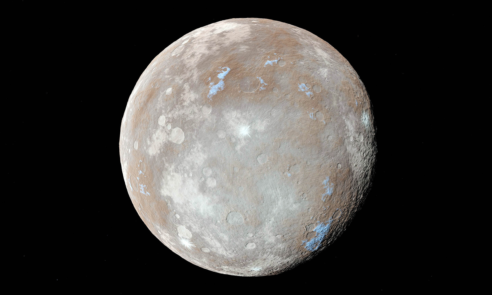
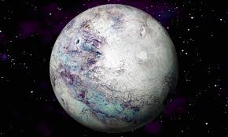
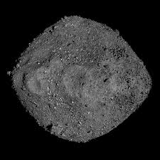

An Overview on Asteroids
Asteroids are small, rocky objects that orbit the Sun, primarily found in the Asteroid Belt between Mars and Jupiter. Unlike planets, they are irregularly shaped and lack atmospheres. These objects are remnants from the early formation of the solar system, leftover building blocks that never coalesced into a planet.
Where Are Asteroids Found?
- Asteroid Belt: The majority of asteroids are located here, a region between Mars and Jupiter containing millions of rocky bodies.
- Near-Earth Asteroids (NEAs): These asteroids have orbits that bring them close to Earth. Some pose potential impact risks.
- Trojan Asteroids: These share an orbit with a larger planet, typically staying in gravitationally stable points ahead of or behind the planet. Jupiter has the most known Trojans.
- Kuiper Belt & Oort Cloud:While mostly home to icy bodies, some asteroids exist in these outer solar system regions.
Types of Asteroids
Famous Asteroids
Ceres

The largest asteroid and the only one classified as a dwarf planet. It has a diameter of about 940 km and even contains signs of water ice.
Ceres is believed to have a solid core and an icy mantle, with a dusty and rocky crust covering its surface. Scientists suspect that a significant portion of Ceres' composition—up to 25%—is ice. This makes it an intriguing candidate for studying water in the early solar system. The dwarf planet’s surface is marked by bright salt deposits, most notably within the Occator Crater. These deposits suggest that liquid water or briny subsurface reservoirs may have once existed beneath its surface. NASA’s Dawn spacecraft, which orbited Ceres between 2015 and 2018, provided strong evidence of possible deep water reservoirs that could have interacted with the surface due to asteroid impacts.
Vesta

Vesta is the second-largest asteroid in the main asteroid belt, with a diameter of about 525 kilometers (326 miles). It has a bright, reflective surface due to its basaltic composition, making it one of the easiest asteroids to observe from Earth. Scientists believe Vesta once had a molten interior, suggesting early volcanic activity. A massive impact created the Rheasilvia crater, nearly the size of Vesta itself, and likely ejected fragments that later fell to Earth as meteorites. NASA’s Dawn spacecraft studied Vesta from 2011 to 2012, revealing details about its complex geological history.
Eros

Eros is a near-Earth asteroid with an elongated shape, measuring about 34.4 kilometers (21.4 miles) in length. It was the first asteroid to be orbited and landed on by a spacecraft—NASA’s NEAR Shoemaker in 2001. Eros belongs to the S-type asteroids, meaning it is composed mainly of silicate rock and nickel-iron. Scientists study Eros to understand the composition of asteroids that could potentially impact Earth. Its surface is covered in craters and boulders, with some features suggesting it has experienced violent collisions over time.
Bennu
